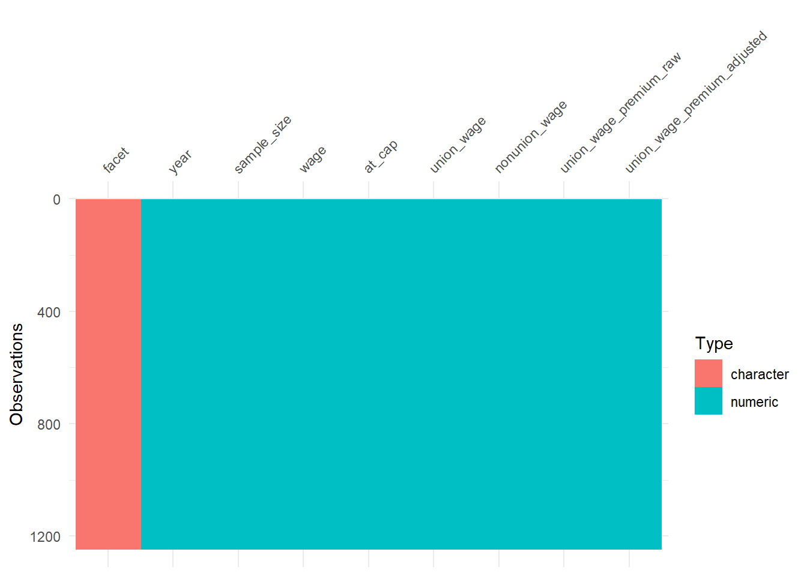
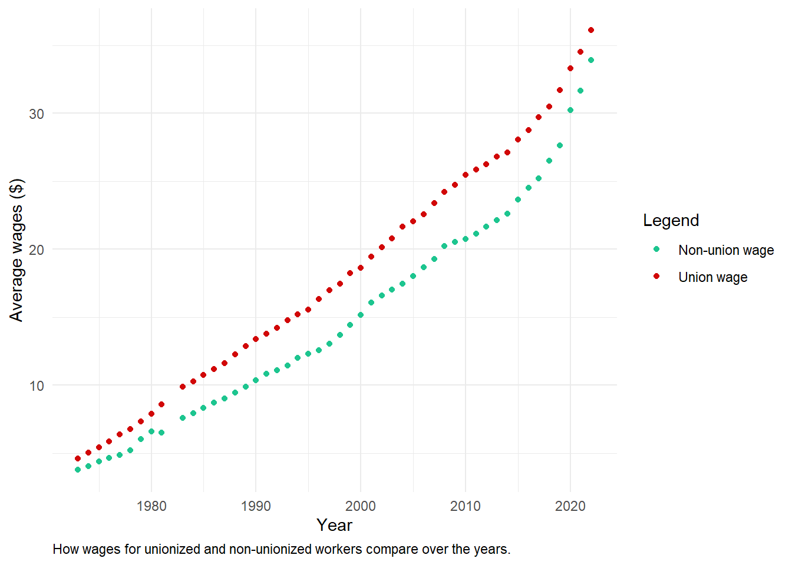
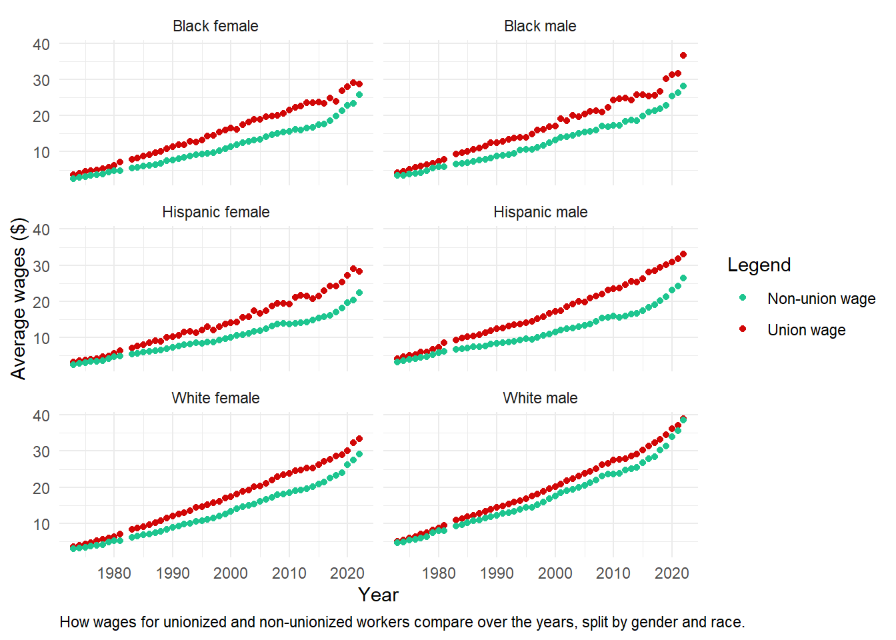

# Library calls
library(dplyr)
library(visdat)
library(skimr)
library(ggplot2)
library(janitor)
library(stringr)
# Reading the data in
wages <- readr::read_csv('https://raw.githubusercontent.com/rfordatascience/tidytuesday/master/data/2023/2023-09-05/wages.csv')
# Set graph theme
theme_set(theme_minimal()) +
theme_update(
plot.caption = element_text(hjust = 0))Union Membership Wages
Setup
First I will call the necessary libraries and read in the data, found at the tidytuesday Github repository.
This data was curated by unionstats.com.
Initial thoughts
From the data dictionary on the Github repo, it looks like the wages dataset will be the most interesting data for me, so I will start by getting an overview of what the dataset looks like.
Exploring
wages |>
vis_dat()
Good, from this vis_dat() graph, I can see there’s no missing variables. The data is nice and cleaned.
Now I will use the skimr::skim() function on the data.
wages |>
skim()| Name | wages |
| Number of rows | 1247 |
| Number of columns | 9 |
| _______________________ | |
| Column type frequency: | |
| character | 1 |
| numeric | 8 |
| ________________________ | |
| Group variables | None |
Variable type: character
| skim_variable | n_missing | complete_rate | min | max | empty | n_unique | whitespace |
|---|---|---|---|---|---|---|---|
| facet | 0 | 1 | 12 | 31 | 0 | 22 | 0 |
Variable type: numeric
| skim_variable | n_missing | complete_rate | mean | sd | p0 | p25 | p50 | p75 | p100 | hist |
|---|---|---|---|---|---|---|---|---|---|---|
| year | 0 | 1 | 1998.27 | 14.23 | 1973.00 | 1987.00 | 1999.00 | 2010.50 | 2022.00 | ▆▇▇▇▇ |
| sample_size | 0 | 1 | 44934.61 | 46449.48 | 265.00 | 6459.50 | 26550.00 | 77177.00 | 169102.00 | ▇▂▂▂▁ |
| wage | 0 | 1 | 15.79 | 8.37 | 2.63 | 9.21 | 14.60 | 21.30 | 48.17 | ▇▇▅▁▁ |
| at_cap | 0 | 1 | 0.02 | 0.02 | 0.00 | 0.00 | 0.01 | 0.02 | 0.15 | ▇▂▁▁▁ |
| union_wage | 0 | 1 | 18.33 | 8.84 | 3.21 | 11.18 | 17.43 | 24.88 | 43.30 | ▆▇▇▃▁ |
| nonunion_wage | 0 | 1 | 15.23 | 8.37 | 2.46 | 8.65 | 13.91 | 20.53 | 48.98 | ▇▇▃▁▁ |
| union_wage_premium_raw | 0 | 1 | 0.25 | 0.17 | -0.19 | 0.15 | 0.24 | 0.35 | 0.77 | ▂▅▇▃▁ |
| union_wage_premium_adjusted | 0 | 1 | 0.19 | 0.10 | -0.04 | 0.13 | 0.19 | 0.22 | 0.59 | ▂▇▃▁▁ |
Even from this skim() function, I can see that union wages tend to be higher than non-union wages!
I’ll filter for all the workers, and create a graph to visualize this difference over the years.
wages |>
filter(facet == "all wage and salary workers") |>
ggplot(aes(x = year)) +
geom_point(aes(y = union_wage,
color = "Union wage")) +
geom_point(aes(y = nonunion_wage,
color = "Non-union wage")) +
labs(x = "Year",
y = "Average wages ($)",
color = "Legend",
caption = "How wages for unionized and non-unionized workers compare over the years.") +
scale_color_manual(values = c("#1dc58f",
"#d10707"))
facet values
So what other values can the facet column have? I’ll use janitor’s tabyl() function to check it out:
wages |>
janitor::tabyl(facet) facet n percent
all wage and salary workers 245 0.19647153
construction 49 0.03929431
demographics: black female 49 0.03929431
demographics: black male 49 0.03929431
demographics: college or more 49 0.03929431
demographics: female 49 0.03929431
demographics: hispanic female 49 0.03929431
demographics: hispanic male 49 0.03929431
demographics: less than college 49 0.03929431
demographics: male 49 0.03929431
demographics: white female 49 0.03929431
demographics: white male 49 0.03929431
private sector: all 49 0.03929431
private sector: construction 49 0.03929431
private sector: manufacturing 49 0.03929431
private sector: nonagricultural 49 0.03929431
public administration 49 0.03929431
public sector: all 49 0.03929431
public sector: federal 40 0.03207698
public sector: local government 40 0.03207698
public sector: state government 40 0.03207698
wholesale/retail 49 0.03929431I’m interested to see if the demographics of gender and race show any differences of wages over the years:
wages |>
filter(str_detect(facet, "male")) |>
mutate(facet = facet |>
str_remove("demographics: ") |>
str_to_sentence()) |>
filter(!(facet %in% c("Male", "Female"))) |>
ggplot(aes(x = year)) +
geom_point(aes(y = union_wage,
color = "Union wage")) +
geom_point(aes(y = nonunion_wage,
color = "Non-union wage")) +
labs(x = "Year",
y = "Average wages ($)",
color = "Legend",
caption = "How wages for unionized and non-unionized workers compare over the years, split by gender and race.") +
scale_color_manual(values = c("#1dc58f",
"#d10707")) +
facet_wrap(facet ~ ., ncol = 2)